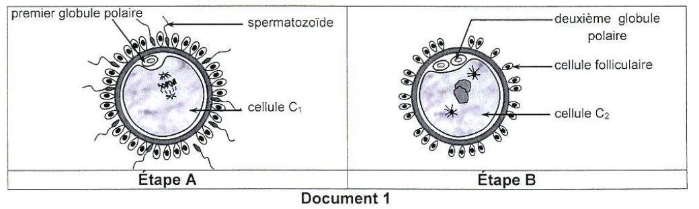
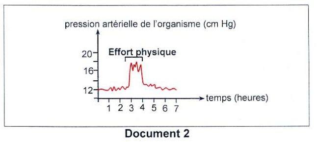
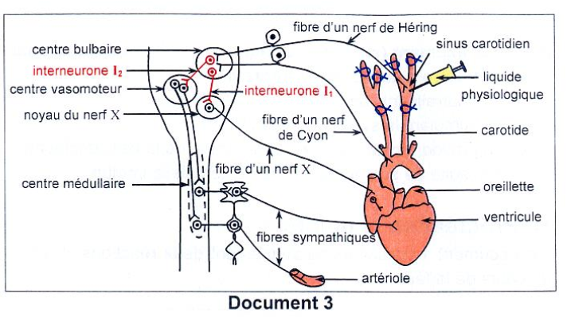
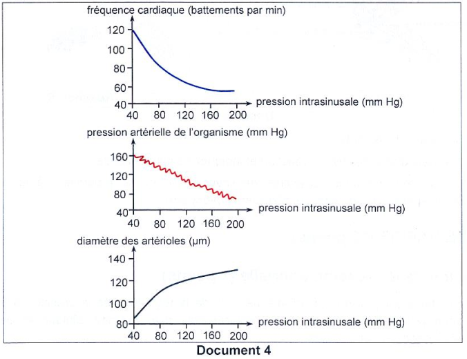
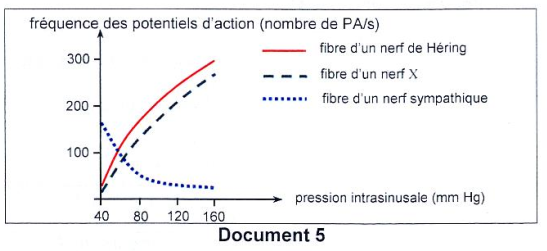
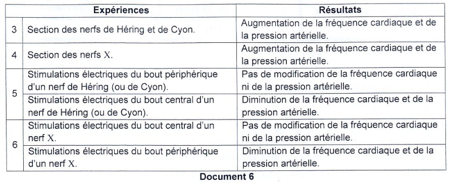
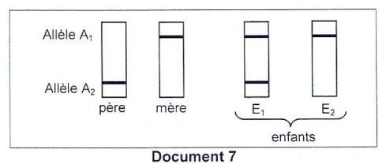

Sciences de la Vie
et de la Terre
Session Contrôle 2022 — Épreuve officielle simulée
Clique sur chaque verbe pour comprendre ce qu'attend le correcteur.
⚠️ Décrire sans interpréter = 0 pt.
⚠️ Nommer sans expliquer = incomplet.
⚠️ Affirmer sans justifier = non recevable.
⚠️ Rédiger un paragraphe entier = perte de temps.
⚠️ Ignorer les documents = hors sujet.
⚠️ Pas de légende = 0 pt.
Ce que tu dois savoir
Notions ciblées pour cette épreuve uniquement
Réaction acrosomique (R₁) : Lorsque le spermatozoïde entre en contact avec la zone pellucide de l'ovocyte II, l'acrosome libère des enzymes (hyaluronidase, acrosine) qui digèrent la zone pellucide, permettant la pénétration du spermatozoïde.
Réaction corticale (R₂) : La pénétration du spermatozoïde déclenche la libération du contenu des granules corticaux de l'ovocyte. Ces enzymes modifient la zone pellucide (durcissement) et la membrane de l'ovocyte, empêchant ainsi la polyspermie (pénétration de plusieurs spermatozoïdes).
Reprise de la méiose : La fécondation (pénétration du spermatozoïde) déclenche la reprise de la méiose de l'ovocyte II qui était bloqué en métaphase II. L'ovocyte II achève sa méiose et donne un ovule (gamète femelle mature) et un deuxième globule polaire.
التفاعل الأكروزومي (R₁) : عندما يلامس الحيوان المنوي المنطقة الشفافة للبويضة II، يطلق الأكروزوم إنزيمات تعمل على هضم المنطقة الشفافة، مما يسمح للحيوان المنوي بالاختراق.
التفاعل القشري (R₂) : يؤدي اختراق الحيوان المنوي إلى تحرير محتويات الحبيبات القشرية للبويضة، مما يؤدي إلى تصلب المنطقة الشفافة ومنع دخول حيوانات منوية أخرى (منع تعدد الإخصاب).
استئناف الانقسام الاختزالي : يؤدي الإخصاب إلى استئناف الانقسام الاختزالي للبويضة II التي كانت متوقفة في الطور الاستوائي II، فتنتج بويضة ناضجة وجسم قطبي ثان.
Barorécepteurs : Situés dans le sinus carotidien et la crosse aortique, ils sont sensibles aux variations de la pression artérielle.
Voies afférentes : Nerf de Hering (sinus carotidien) et Nerf de Cyon (crosse aortique) transmettent les informations au centre bulbaire.
Voies efférentes : Nerf X (parasympathique) ralentit la fréquence cardiaque. Les fibres sympathiques l'augmentent et modifient le diamètre des artérioles.
مستقبلات الضغط : توجد في الجيب السباتي وقوس الأبهر، وهي حساسة لتغيرات ضغط الدم.
المسارات الواردة : ينقل عصب هيرينغ وعصب كيون المعلومات إلى المركز البصلي.
المسارات الصادرة : يبطئ العصب X (الباراسمبثاوي) سرعة القلب، بينما تزيد الألياف الودية من سرعة القلب وتغير قطر الشرايين.
Électrophorèse : Technique permettant de séparer les allèles (fragments d'ADN) en fonction de leur taille et de leur charge.
Allèles : Allèle dominant (A₁) et Allèle récessif (A₂). La présence d'une bande indique la présence de l'allèle.
Localisation : L'analyse des bandes chez les parents et les enfants permet de déterminer si le gène est porté par un autosome ou un gonosome.
الرحلان الكهربائي : تقنية تسمح بفصل الأليلات (قطع ADN) حسب حجمها وشحنتها.
الأليلات : أليل سائد (A₁) وأليل متنحي (A₂). وجود حزمة يدل على وجود الأليل.
التوطين : تحليل الحزم عند الوالدين والأبناء يسمح بتحديد ما إذا كان الجين محمولاً على صبغي جسدي أم جنسي.
Ministère de l'Éducation
EXAMEN DU BACCALAURÉAT
Pour chacun des items suivants (de 1 à 8), il peut y avoir une (ou deux) réponse(s) correcte(s). Reportez sur votre copie le numéro de chaque item et indiquez dans chaque cas la (ou les deux) lettre(s) correspondant à la (ou aux deux) réponse(s) correcte(s).
NB : toute réponse fausse annule la note attribuée à l'item.

doc1-procreation.png

doc2-pression.png

doc3-dispositif.png

doc4-courbes-parametres.png

doc5-courbes-PA.png
– du sinus carotidien.
– de chacun des interneurones I₁ et I₂.

doc6-tableau-experiences.png

doc7-electrophorese.png
a- d'identifier l'allèle responsable de la maladie et le phénotype de chaque parent.
b- d'identifier l'allèle dominant et l'allèle récessif.
c- de discuter la localisation du couple d'allèles (A₁, A₂).
d- de préciser le sexe de chaque enfant.
e- de déterminer le génotype de chaque membre de la famille.
Pour chacun des items suivants (de 1 à 8), il peut y avoir une (ou deux) réponse(s) correcte(s). Reportez sur votre copie le numéro de chaque item et indiquez dans chaque cas la (ou les deux) lettre(s) correspondant à la (ou aux deux) réponse(s) correcte(s).
NB : toute réponse fausse annule la note attribuée à l'item.